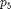
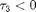
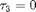
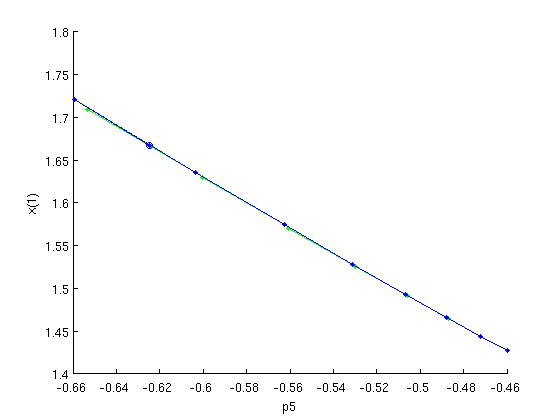
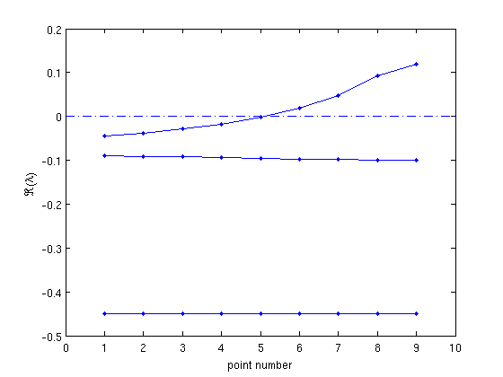

Contents
- Continuation and stability of Equilibria for state-dependent delays
- Initial guess for steady state
- Construction of initial piece of branch
- Continuation of equilibria
- Figure: branch of equilibria
- Stability of equilibria and eigenvalues of linearization
- Figure: Eigenvalues of linearization along branch
- Save results and continue with Hopf bifurcations
Continuation and stability of Equilibria for state-dependent delays
Once the user-defined functions are prepared, DDE-Biftool can compute and continue equilibria of the DDE, and compute their linearized stability, thus detecting local bifurcations. This demo requires sd_demo_funcs.html to have run beforehand.
% (c) DDE-BIFTOOL v. 3.1.1(20), 11/04/2014
%#ok<*ASGLU,*NOPTS,*NASGU> %
Initial guess for steady state
We define a steady state solution using the parameter values listed in stst.parameter and an initial guess in stst.x. Then we get default point method parameters and correct the point,
stst.kind='stst'; stst.parameter=[4.5 0.04 -1.4 6 -0.45 -0.01 3 0.3 0.1 1 0.2]; stst.x=[1.4 1.5 -25 0.6 1.4]'; % get default method parameters for stst calculations: method=df_mthod(funcs,'stst'); % correct the point: [stst,success]=p_correc(funcs,stst,[],[],method.point) stst.x
stst =
kind: 'stst'
parameter: [1x11 double]
x: [5x1 double]
success =
1
ans =
1.4134
1.5193
-25.1077
0.5886
1.3801
Construction of initial piece of branch
We will use this point as a first point to compute a branch of steady state solutions. First, we obtain an empty branch with free parameter . To obtain a second starting point we change parameter value slightly and correct again.
branch1=df_brnch(funcs,5,'stst'); branch1.parameter.min_bound(1,:)=[5 -1]; % lower and branch1.parameter.max_bound(1,:)=[5 1]; % upper bound for p_5 branch1.parameter.max_step(1,:)=[5 0.1]; % max predictor step along branch branch1.point=stst; % use stst as a first branch point stst.parameter(5)=stst.parameter(5)-0.01; % perturb and [stst,success]=p_correc(funcs,stst,[],[],method.point); % correct again branch1.point(2)=stst; % and use as a second branch point
Continuation of equilibria
With two starting points and suitable method parameters we continue the branch (with plotting) versus parameter , see figure below. During continuation, seven points were successfully computed before the state-dependent delay function crossed zero (signalled by a warning). The computed point with  was not accepted. Instead, the point corresponding to  was computed, see figure below. We check the value of at the last point in the branch using function p_tau.
In similar cases, it might happen that the computed value of a delay is a very small negative value. Because stability cannot be computed when there are negative delays, small negative delay values are automatically neglected when their value is larger than the value defined in the field method.stability.delay_accuracy.
figure(1); clf; [branch1,s,f,r]=br_contn(funcs,branch1,20) % continue with plotting the branch plot(branch1.point(end).parameter(5),branch1.point(end).x(1),'o'); xlabel('p5');ylabel('x(1)'); p_tau(funcs,branch1.point(end),3)
BR_CONTN warning: delay number_3 becomes negative.
branch1 =
method: [1x1 struct]
parameter: [1x1 struct]
point: [1x9 struct]
s =
8
f =
0
r =
0
ans =
2.2204e-16
 Figure: branch of equilibria
Output of br_contn: predictions and corrections after computation of a branch of steady state solutions versus parameter . o - the last computed point in the branch (corresponding to )
Stability of equilibria and eigenvalues of linearization
We compute the stability along the branch and after obtaining suitable measure structures we plot the real part of the corrected roots of the characteristic equation along the branch versus the point numbers, see figure below. From this figure it is not clear which real parts correspond to real roots respectively complex pairs of roots. We check point 5,
branch1.method.stability.minimal_real_part=-1; branch1=br_stabl(funcs,branch1,0,0); % obtain suitable scalar measures to plot stability along branch: [xm,ym]=df_measr(1,branch1); ym.subfield='l1'; figure(2); clf; br_plot(branch1,[],ym,'b'); % stability along branch versus point number br_plot(branch1,[],ym,'b.'); plot([0 10],[0 0],'-.'); % axis branch1.point(5).stability.l1 % stability of point 5 xlabel('point number');ylabel('\Re(\lambda)');
ans = -0.0023 + 0.5488i -0.0023 - 0.5488i -0.0952 -0.4499
Figure: Eigenvalues of linearization along branch
Real parts of the corrected roots of the characteristic equation along the branch.
Save results and continue with Hopf bifurcations
The file sd_demo_hopf.html shows how to detect and continue Hopf bifurcations.
save('sd_demo_stst');